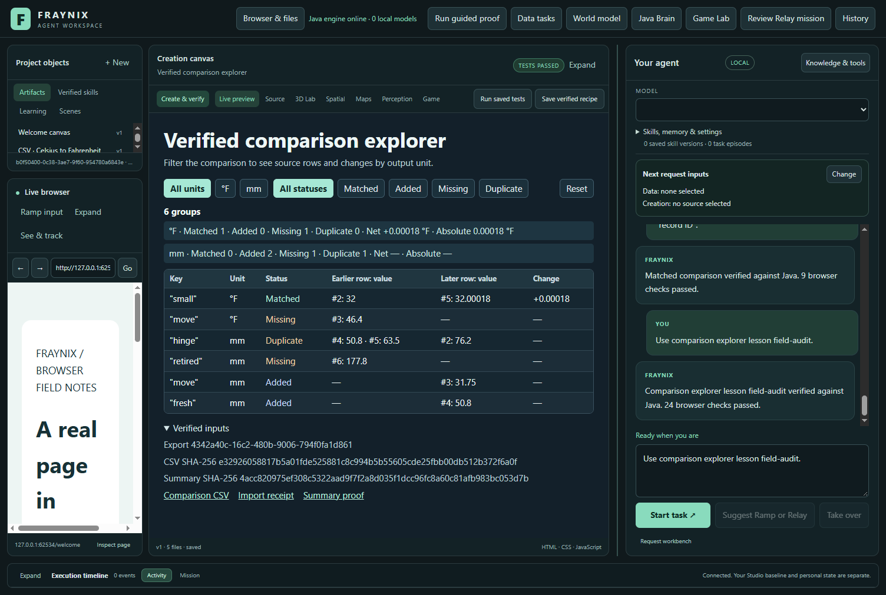

Teach and reuse a verified comparison explorer
Save a verified explorer as a named lesson and reuse it on fresh comparison data. Check the lesson, the original teaching evidence and each new result.
The reused lesson shows zero net temperature change and eighteen degrees of total movement

The reused lesson keeps the small temperature change and the unmatched length groups separate
System files
Open source